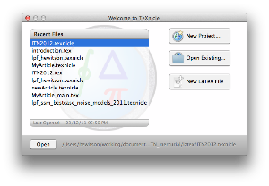
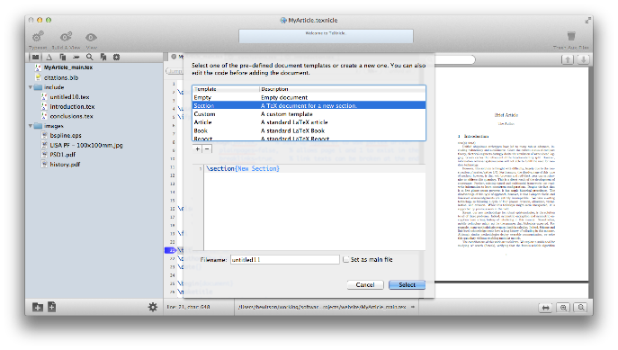

Getting started with TeXnicle Projects


TeXnicle allows you to organise your LaTeX files in to projects. A project results in a single compiled document. Your project can contain all kinds of files. TeXnicle is able to edit any text-based file type in its internal editor; for other file types, an external editor will be launched when required.
To create your first project, launch TeXnicle, and you should see if the “Welcome To TeXnicle” window. (If you don’t you can open it from the menu “Window->Welcome To TeXnicle”.)
From there you can open an existing project, start a new project, or create a new TeX file. If you click on “New Project...” you will be offered a number of options:
- Empty Project: creates a new empty TeXnicle project document.
-
-New Article: creates a standard LaTeX article project.
-
-Build Project: will build a project by parsing an existing main file.
TeXnicle project documents look like this:

You will see that the main article (in bold in the project tree) and you can typeset and view this article by clicking on the “Typeset” toolbar button or by the menu “Typeset -> Typeset Project”.
You can add more files to the project by clicking on the new file  button at the bottom. Under the project menu or using right-click context menu on the tree, or by using the action menu
button at the bottom. Under the project menu or using right-click context menu on the tree, or by using the action menu  ,you will also find options to add existing files and folders to the project.
,you will also find options to add existing files and folders to the project.
Let’s add a new file to the project. First deselect all files in the project tree (cmd-click) to ensure the new file will be added to the base of the tree. Click the “New File” button. You should be presented with a new file template window like the one below:
Select the “Section” template, change the filename to something more sensible, uncheck the “Set as main file” button and click select. You will now have a new file in the project ready to edit.
To include the new file in the document, you need to use a LaTeX input statement. Select the main file in the project tree and add an include statement just before the \end{document} statement.
Firstly you will note that TeXnicle automatically completes your brackets when you type the opening bracket. With the cursor inside the two brackets, hit the escape key (or select “Edit -> Smart Complete” from the menu bar). You should get a popup which allows you to choose which project file you want to include:

Double click the “introduction.tex” file or navigate with the arrow keys to select it then hit enter; TeXnicle will then complete your input statement.


